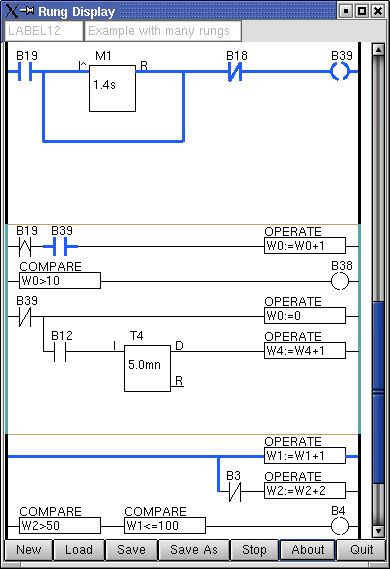
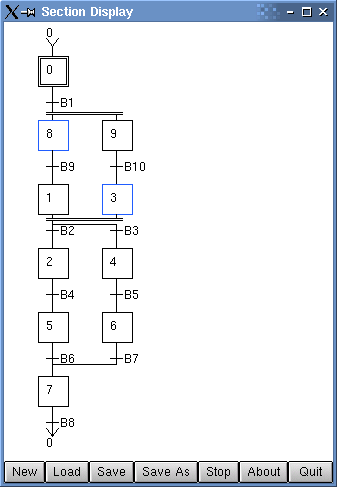

Classicladder
Classicladder is a graphical stepladder and GRAFCET editor
and executive module. It is a separate project led by Marc Le Dourain, and
it can be obtained from his website,
http://www.multimania.com/mavati/classicladder
The website also contains the relevant documentation.
Any enhancements, bug reports, bug fixes and so on (including those
relating to the MatPLC integration) should be submitted to Marc.


$Date: 2004/12/28 05:32:11 $